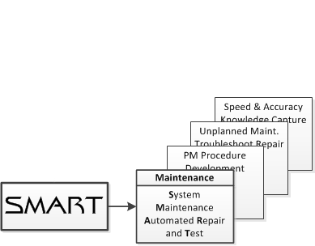

Welcome to Diversified Industries C & IS Inc.
Diversified Industries (DI) provide technicians and engineers with a very powerful and intuitive NASA derived Unplanned Planned Maintenance Software Solution called SMART (System Maintenance Automated Repair and Test.
SMART provides an on-the-spot troubleshooting and automated procedure generation tool of best-practice repair solutions. The tool often used in a wireless environment on mobile computers. SMART is also accessible via a standard desktop computer and support both paper and paperless work environments.
SMART is integrated via DI software developed API (Application Programing Interface) into the customer’s existing planned maintenance work control database. SMART may also be installed and integrated on a local server.

SMART is a cloud-based subscription product that supports both wired and wireless browser-based computers. SMART proven the following benefits:
- Generating on-demand repair and test procedures
- Providing 30% to 40% reduction in repair time compared to traditional industry methods
- Up to 80% reduction in documentation production time
- Easy access to organization’s core and unique solutions of unplanned events
- Drastically improves first attempt problem resolution rates through simple self-guided diagnostic decision trees
- Increased ability to retain and grow best-practice knowledge of skilled workers that can be shared with the team
Supported industries:
- Aerospace
- Electrical Power Generation
- Ground & Rail Transportation Systems
- Maritime Vessels